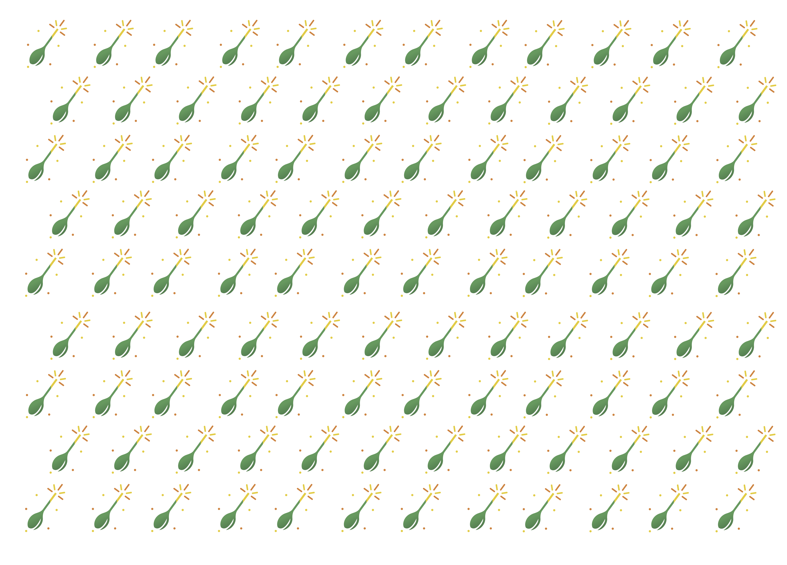

Destacado
Desayunos
Panqueques Esponjosos con Frutas
Comienza tu día con estos panqueques increíblemente esponjosos, acompañados de frutas frescas de temporada y un toque de miel orgánica.
Ver Receta Completa